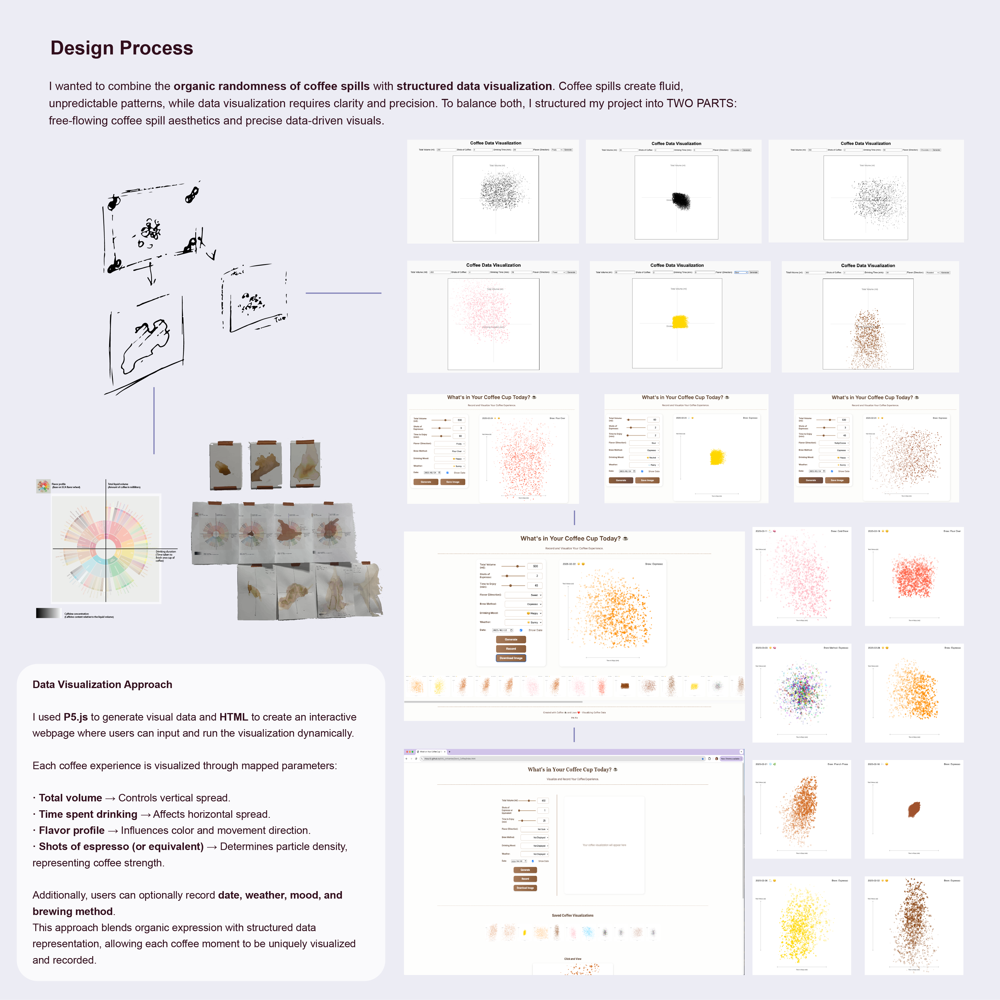
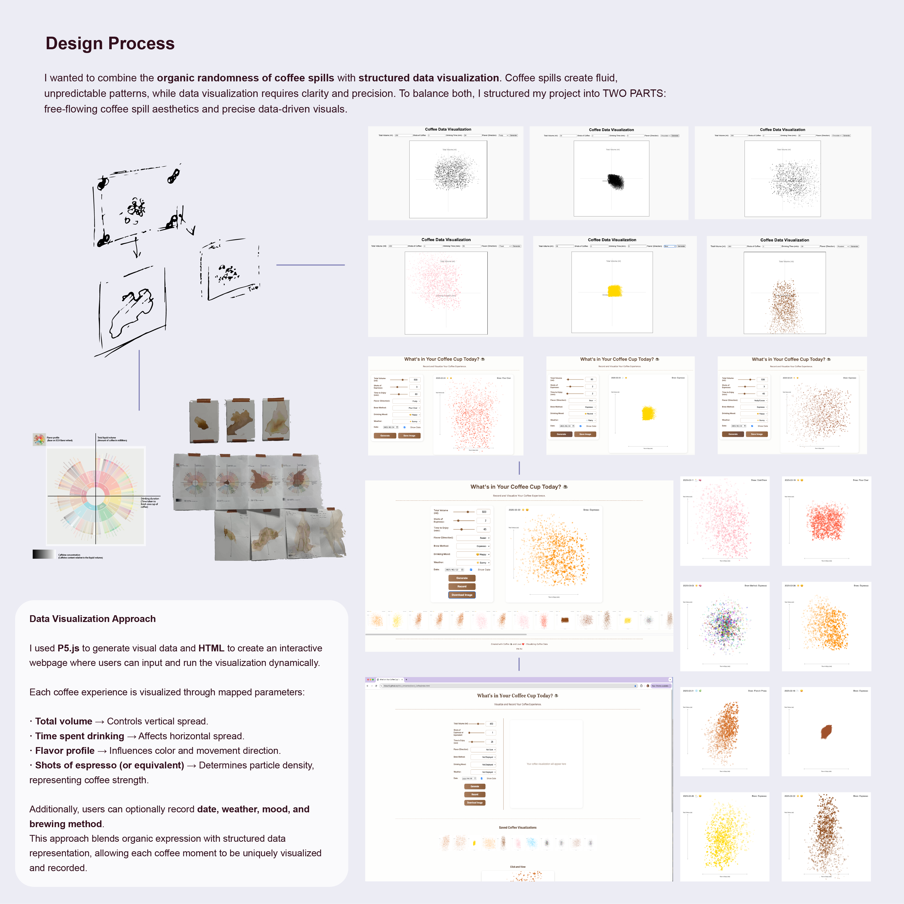
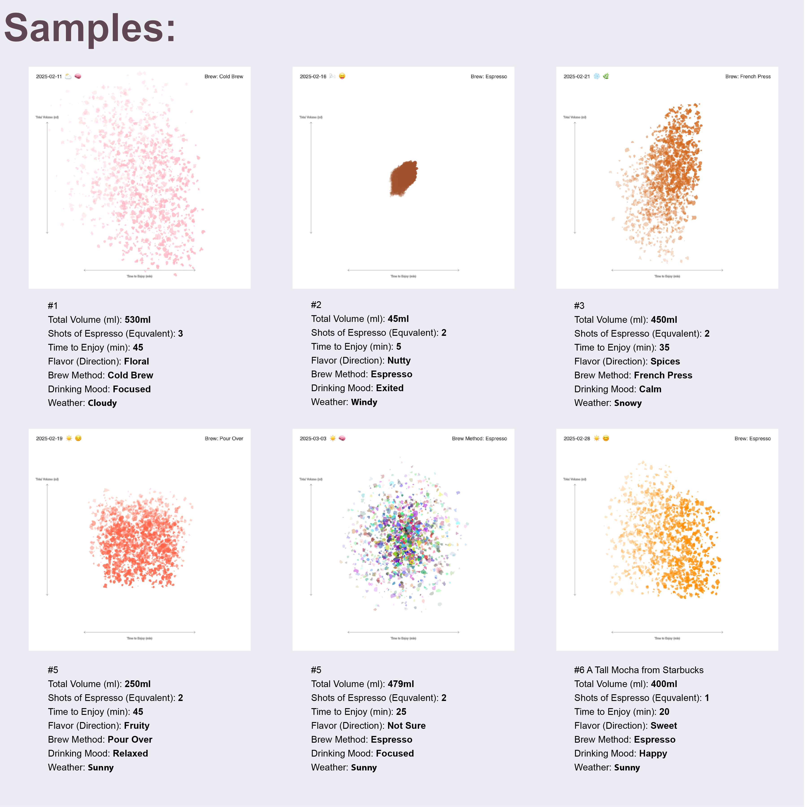

What’s in Your Coffee Cup?
This project captures the sensory essence of daily coffee rituals through data visualization. Instead of focusing solely on taste, it explores how each cup reflects a unique moment—shaped by the total liquid volume, time spent drinking, flavor notes, and coffee strength.
Using p5.js, these elements are translated into generative patterns—dots, lines, and colors—mapped directly from real-life data. Paired with handcrafted acrylic layers and coffee-stained canvas prints, the project creates a tangible archive of ephemeral experiences, blending code and materiality to honor the richness behind each cup.
 

